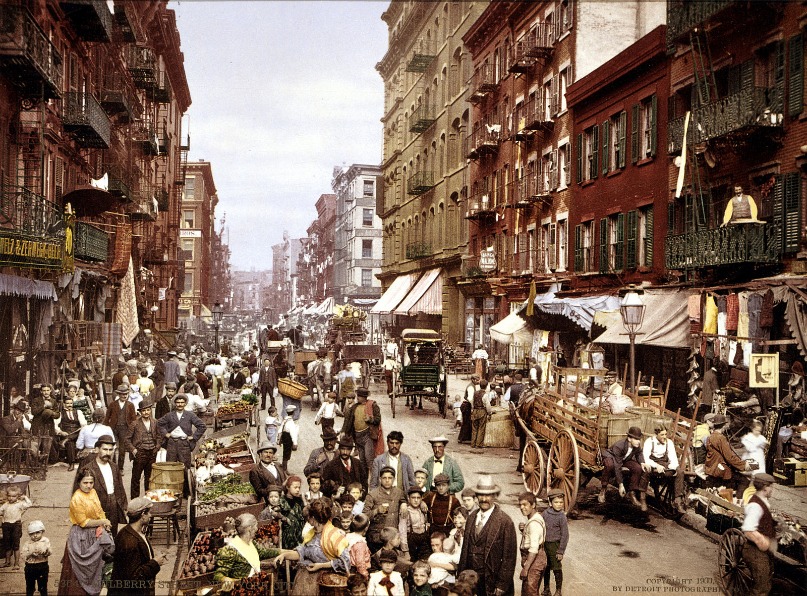
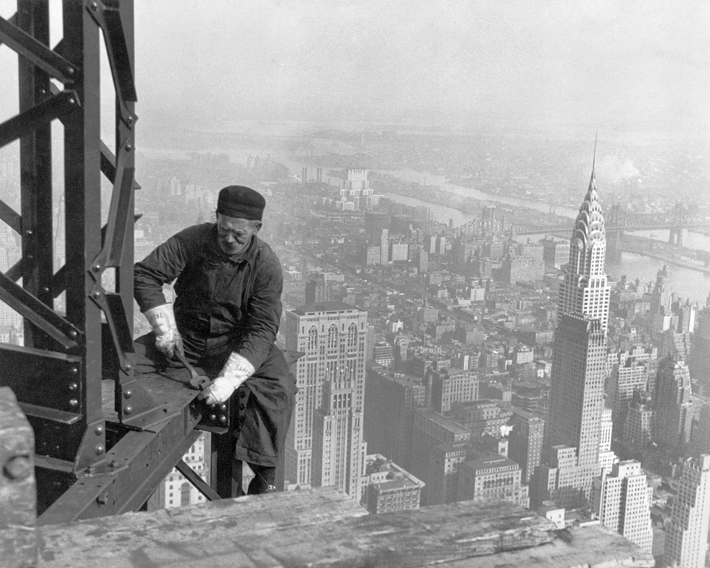
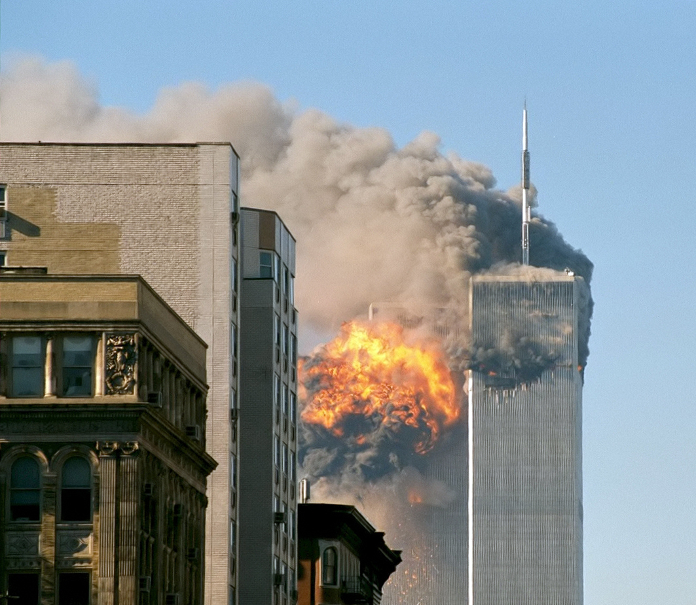

Manhattan's Little Italy, Lower East Side, circa 1900.
The Great Irish Famine brought a large influx of Irish immigrants. Over 200,000 were living in New York by 1860 (comprising a quarter of the population).[96] There was also extensive immigration from the German provinces, where revolutions had disrupted societies, and Germans comprised another 25% of New York's population by 1860.

Fig1. Manhattan-Little Italy, Lower East Side, 1900.
Democratic Party candidates were consistently elected to local office, increasing the city's ties to the South and its dominant party. In 1861, Mayor Fernando Wood called on the aldermen to declare independence from Albany and the United States after the South seceded, but his proposal was not acted on.[91] Anger at new military conscription laws during the American Civil War (1861–1865), which spared wealthier men who could afford to pay a $300 (equivalent to $5,746 in 2015) commutation fee to hire a substitute,[98][99] led to the Draft Riots of 1863, whose most visible participants were ethnic Irish working class. The situation deteriorated into attacks on New York's elite, followed by black New Yorkers and their property after fierce competition for a decade between immigrants and blacks for work. Rioters burned the Colored Orphan Asylum to the ground, but its more than 200 children escaped harm due to efforts of the city's largely Irish immigrant police force.[97] According to historian James M. McPherson (2001), at least 120 civilians were killed. In all, eleven black men were lynched over five days, and the riots forced hundreds of blacks to flee the city for Williamsburg, Brooklyn and New Jersey; the black population in Manhattan fell below 10,000 by 1865, which it had last been in 1820. The white working class had established dominance.[97][100] Violence by longshoremen against black men was especially fierce in the docks area.[97] It was one of the worst incidents of civil unrest in American history.

A construction worker on top of the Empire State Building as it was being built in 1930. The Chrysler Building is below and behind him.
A man working on a steel girder high about a city skyline.
A construction worker on top of the Empire State Building as it was being built in 1930. The Chrysler Building is below and behind him.
In 1898, the modern City of New York was formed with the consolidation of Brooklyn (until then a separate city), the County of New York (which then included parts of the Bronx), the County of Richmond, and the western portion of the County of Queens.[102] The opening of the subway in 1904, first built as separate private systems, helped bind the new city together. Throughout the first half of the 20th century, the city became a world center for industry, commerce, and communication.
In 1904, the steamship General Slocum caught fire in the East River, killing 1,021 people on board. In 1911, the Triangle Shirtwaist Factory fire, the city's worst industrial disaster, took the lives of 146 garment workers and spurred the growth of the International Ladies' Garment Workers' Union and major improvements in factory safety standards.
UN Secretary General Dag Hammarskjöld in front of the United Nations Headquarters building, completed in 1952.
New York's non-white population was 36,620 in 1890.[104] New York City was a prime destination in the early twentieth century for African Americans during the Great Migration from the American South, and by 1916, New York City was home to the largest urban African diaspora in North America. The Harlem Renaissance of literary and cultural life flourished during the era of Prohibition. The larger economic boom generated construction of skyscrapers competing in height and creating an identifiable skyline.
New York became the most populous urbanized area in the world in early 1920s, overtaking London. The metropolitan area surpassed the 10 million mark in early 1930s, becoming the first megacity in human history.[105] The difficult years of the Great Depression saw the election of reformer Fiorello La Guardia as mayor and the fall of Tammany Hall after eighty years of political dominance.
Returning World War II veterans created a postwar economic boom and the development of large housing tracts in eastern Queens. New York emerged from the war unscathed as the leading city of the world, with Wall Street leading America's place as the world's dominant economic power. The United Nations Headquarters was completed in 1952, solidifying New York's global geopolitical influence, and the rise of abstract expressionism in the city precipitated New York's displacement of Paris as the center of the art world.
A two-story building with brick on the first floor, with two arched doorways, and gray stucco on the second floor off of which hang numerous rainbow flags.
The Stonewall Inn in Greenwich Village, a designated National Historic Landmark as the site of the 1969 Stonewall Riots.
The Stonewall Inn in Greenwich Village, a designated National Historic Landmark as the site of the 1969 Stonewall Riots.[108]
The Stonewall riots were a series of spontaneous, violent demonstrations by members of the gay community against a police raid that took place in the early morning hours of June 28, 1969, at the Stonewall Inn in the Greenwich Village neighborhood of Lower Manhattan. They are widely considered to constitute the single most important event leading to the gay liberation movement and the modern fight for LGBT rights in the United States.
Two tall, gray, rectangular buildings spewing black smoke and flames, particularly from the left of the two.
United Airlines Flight 175 hits the South Tower of the former World Trade Center on September 11, 2001.
In the 1970s, job losses due to industrial restructuring caused New York City to suffer from economic problems and rising crime rates.[111] While a resurgence in the financial industry greatly improved the city's economic health in the 1980s, New York's crime rate continued to increase through the decade and into the beginning of the 1990s.[112] By the 1990s, crime rates started to drop dramatically due to revised police strategies, improving economic opportunities, gentrification, and new residents, both American transplants and new immigrants from Asia and Latin America. Important new sectors, such as Silicon Alley, emerged in the city's economy. New York's population reached all-time highs in the 2000 Census and then again in the 2010 Census.

United Airlines Flight 175 hits the South Tower of the former World Trade Center on September 11, 2001.
The city and surrounding area suffered the bulk of the economic damage and largest loss of human life in the aftermath of the September 11, 2001 attacks on the United States. 2,978 people died as a result of the terrorist attack on the World Trade Center and many more were injured in the disaster.[113] The rebuilding of the area, has created a new One World Trade Center, and a 9/11 memorial and museum along with other new buildings and infrastructure. The World Trade Center PATH station, which opened on July 19, 1909 as the Hudson Terminal, was also destroyed in the attack. A temporary station was built and opened on November 23, 2003. A permanent station, the World Trade Center Transportation Hub, is currently under construction.[114] The new One World Trade Center is the tallest skyscraper in the Western Hemisphere[115] and the fourth-tallest building in the world by pinnacle height, with its spire reaching a symbolic 1,776 feet (541.3 m) in reference to the year of American independence.
The Occupy Wall Street protests in Zuccotti Park in the Financial District of Lower Manhattan began on September 17, 2011, receiving global attention and spawning the Occupy movement against social and economic inequality worldwide.[120]